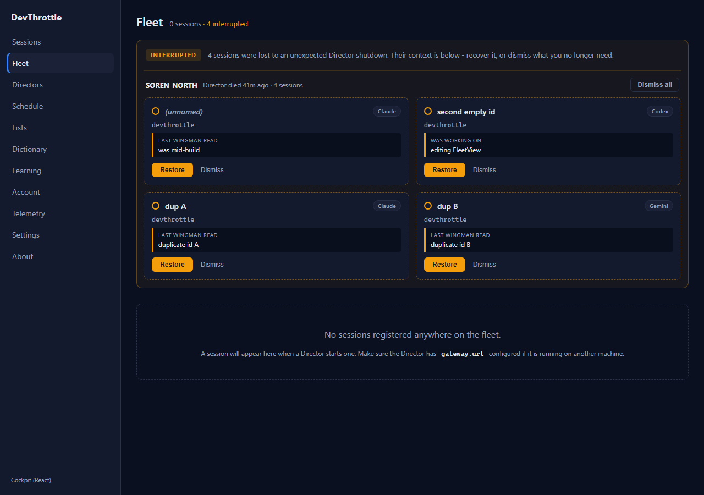
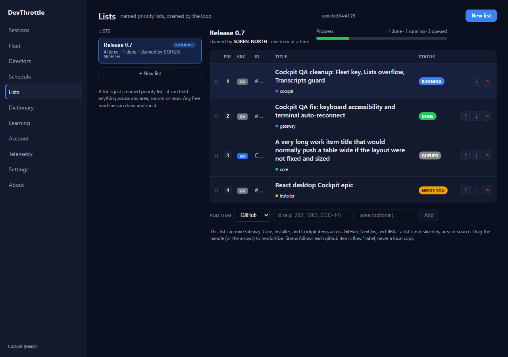
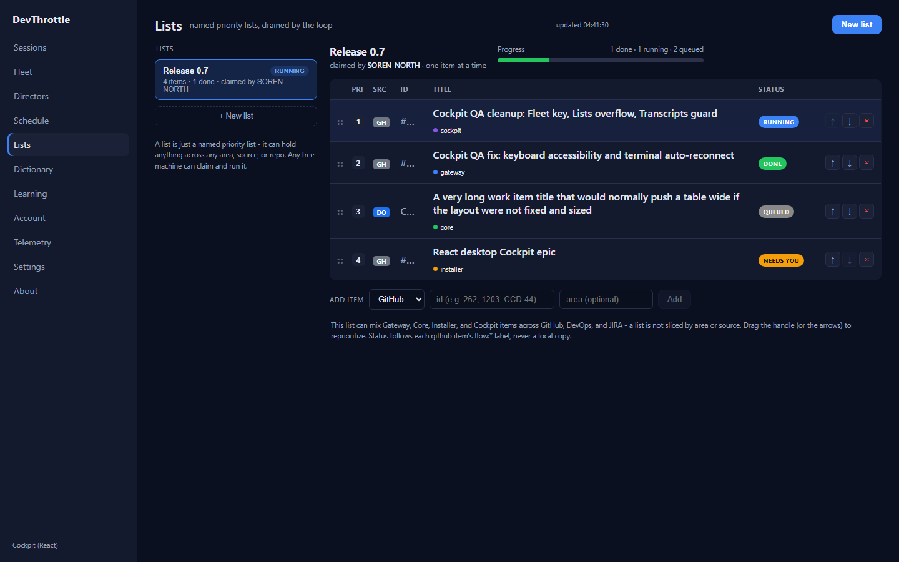

| Gate | Result |
|---|---|
Cockpit npm run build (tsc --noEmit + vite build) | PASS - 108 modules, 0 errors |
npm run lint (eslint .) | PASS - no findings |
Gateway dotnet build -p:RunCockpitBuild=true | PASS - Build succeeded, 0 Warning(s), 0 Error(s) |
dotnet build cc-director.sln | PASS - Build succeeded, 0 Warning(s), 0 Error(s) |
client-core vitest run | PASS - 10 files, 108 tests (11 new) |
apps/cockpit/src/fleet/FleetView.tsx: the interrupted crash-journal cards mapped with
key={s.sessionId}. Journals with empty or duplicate sessionIds collided, logging
"Each child in a list should have a unique key prop". Fixed to a guaranteed-unique key
{`${s.sessionId}-${index}`} (the map index is unique within the group).
| Criterion | Expected | Actual (measured) |
|---|---|---|
| /fleet renders interrupted cards with empty + duplicate session ids | 4 cards render | 4 cards rendered |
| No React "unique key" warning in the console | 0 warnings | 0 warnings (react_key_warnings = []) |
Fixture: one crash-journal group with four sessions whose sessionIds are "", "",
"dup", "dup" (two empty, two duplicated) - the exact collision shape. With the
old key these four keys were "", "", "dup", "dup" (React warns); with the fix they are
"-0", "-1", "dup-2", "dup-3" (unique).

table-layout: fixed (issue #1026). The residual ~25px overflow came
from the row-actions column: three 24px buttons + their 3px gaps + cell padding need ~103px, but the
column was declared 66px, so the nowrap actions spilled past the fixed column edge. Fix:
apps/cockpit/src/lists/ListsView.tsx - widen the actions header cell from 66px to 108px so
the buttons fit inside their column. No CSS token or color changed.
| Viewport | Actions column | Table internal overflow | Actions-cell overflow |
|---|---|---|---|
| 1280px | 108px (shipped) | 0px | 0px |
| 1280px | 66px (old, forced back) | 25px | 26px |
| 1440px | 108px (shipped) | 0px | 0px |
| 1440px | 66px (old, forced back) | 25px | 26px |
The forced-old (66px) row reproduces QA's reported ~25px overflow exactly, confirming both the root cause and that the fix removes it. Title and Status stay fully visible at both widths.


packages/client-core/src/recordings/recordingsClient.ts: getRecordings() did
return body ?? [] where body may be a non-array JSON value; TranscriptsView then
threw r.map is not a function. Fixed to Array.isArray(body) ? body : []. The two
sibling bare-array list reads with the same shape were hardened too:
getFleetDirectors() and getInterrupted() in
packages/client-core/src/fleet/fleetClient.ts.
| Case | Expected | Actual |
|---|---|---|
| getRecordings, array body | returns the array | PASS |
| getRecordings, object / null / string body | returns [] (no throw) | PASS (3 cases) |
| getRecordings, non-2xx | throws GatewayError | PASS |
| getFleetDirectors / getInterrupted, non-array body | returns [] (no throw) | PASS |
New tests: packages/client-core/src/recordings/recordingsClient.test.ts (5),
packages/client-core/src/fleet/fleetClient.test.ts (6). Full suite: 108 passed.
No drift. No architecture or security-posture change - three localized frontend fixes (a React key,
a table column width, and defensive parsing of a list response). No docs/cencon/ update
required.
apps/cockpit/src/fleet/FleetView.tsx - unique key for interrupted cardsapps/cockpit/src/lists/ListsView.tsx - actions column 66px -> 108pxpackages/client-core/src/recordings/recordingsClient.ts - Array.isArray guardpackages/client-core/src/fleet/fleetClient.ts - Array.isArray guard on two sibling readspackages/client-core/src/recordings/recordingsClient.test.ts - new testspackages/client-core/src/fleet/fleetClient.test.ts - new testsI believe this is finished.